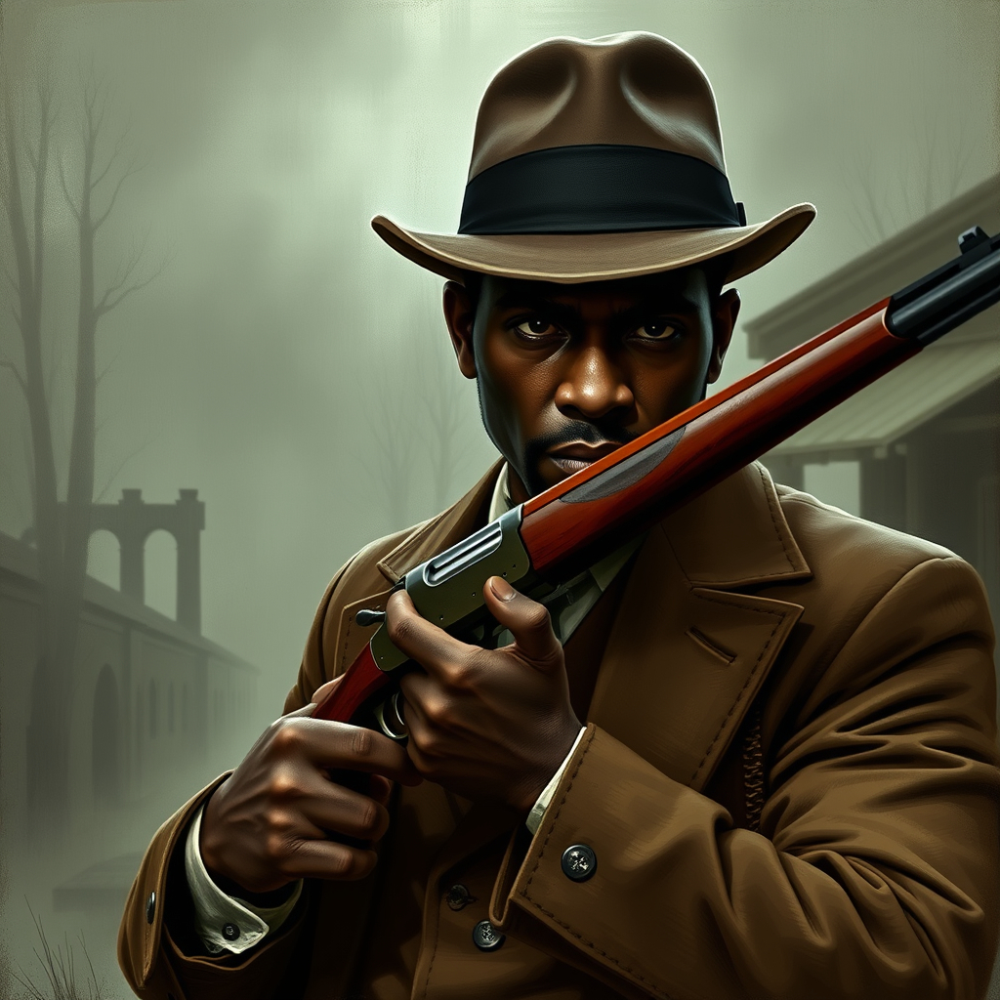
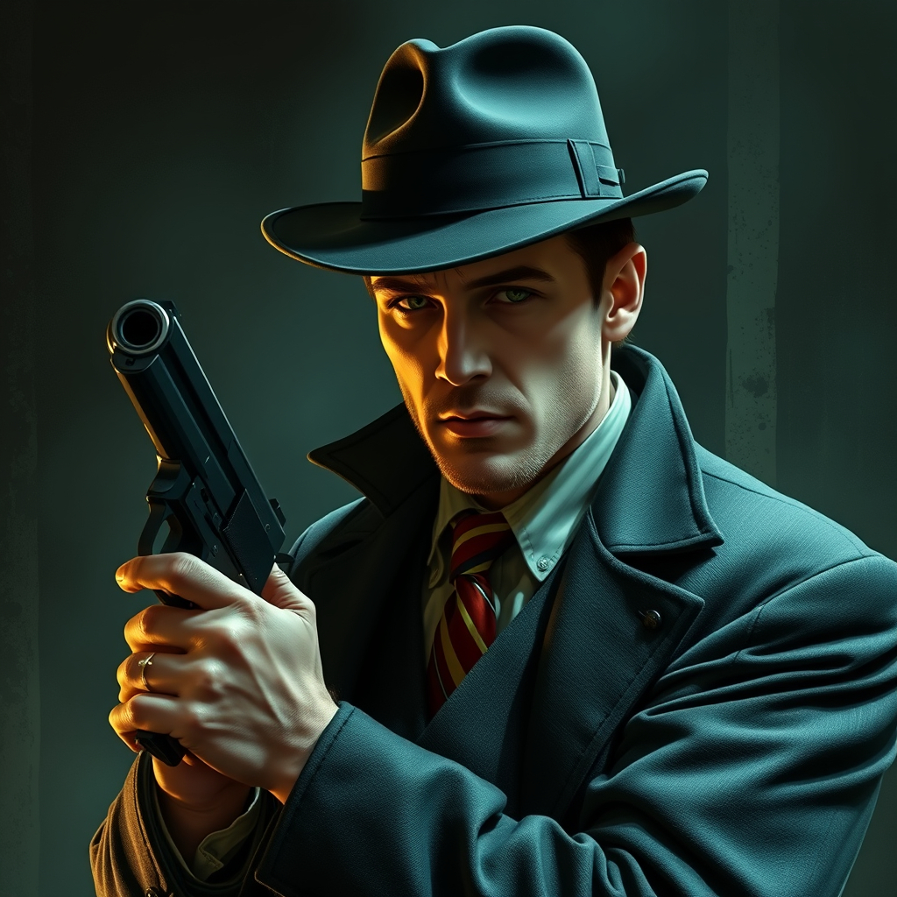
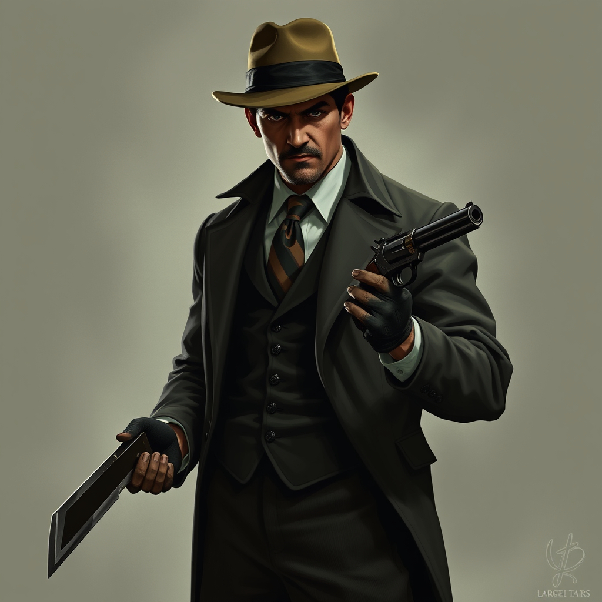

Dreams of the Drowned City
Overview
Since their return from the battle against Adelei and Ithaqua, the investigators have been plagued by recurring dreams of a vast, impossible city, its green stone spires stretching toward a sky that should not exist. The dreams are more than simple nightmares — they feel real, pulling them toward something beneath the waves. Worse, the longer they ignore them, the worse they become. Sleep deprivation sets in, and they begin hearing whispers, feeling a strange pull toward the sea.
Characters
| Name | Class | About | Portrait |
|---|---|---|---|
| Peter Gill | Hunter | The Hitman - who always has a trick up his sleeve to get out of trouble when he's hired to do the job that nobody else will take. |  |
| Keith David | Mystic | The Apprentice Chef - who was taught secret knowledge by his mentor Adelei, and wants to follow in his footsteps. | |
| McG | Seeker | The Paranormal Investigator - who left the Boston PD when he couldn't find the answers he was looking for there. |  |
| Dan Pacho | Guardian | The Enforcer - who knows what needs to be done, and anything that gets in his way may find itself missing body parts very soon. |  |
The Adventure
Act 1: Black Tides in Kingsport
Seamus O'Bannion calls the team in for a meeting - a shipment of goods has gone missing on its way to Kingsport, and dead bodies have washed up on the shore. He sends the investigators to recover the goods and find out what is going on.